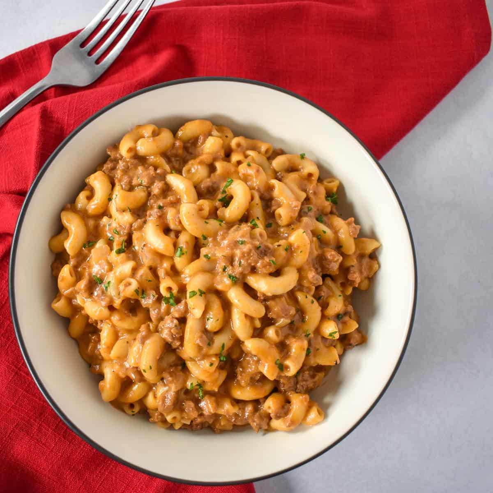

Cheeseburger Macaroni

Description
Cheeseburger Mac is a simple and relatively healthy meal that can be made in about 30 minutes.
Gordon Ramsey himself would shit his pants after tasting this amazing recipe.
Ingredients
- 1lb lean ground beef (90% lean preferred)
- 8 ounces uncooked whole wheat elbow macaroni
- 3 cups reduced-sodium beef broth
- 3/4 cup fat-free milk
- 3 tablespoons ketchup
- 2 teaspoons Montreal steak seasoning
- 1 teaspoon prepared mustard
- 1 cup shredded reduced-fat cheddar cheese
- 1/4 teaspoon onion powder
- Minced chives
Steps
- In a large skillet, cook beef over medium heat 6-8 minutes or until no longer pink, breaking into crumbles; drain.
- Stir in macaroni, broth, milk, ketchup, steak seasoning, mustard, and onion poweder; bring to a boil. Reduce heat; simmer, uncovered, 10-15 minutes or until macaroni is tender. Stir in cheese until melted. Sprinkle with chives.
- Serve your ultra-delicious meal!